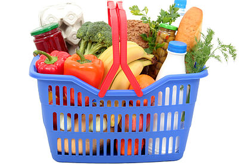
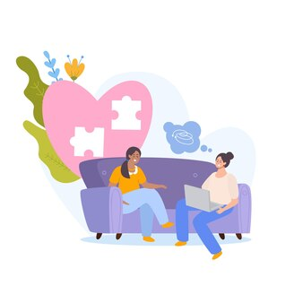
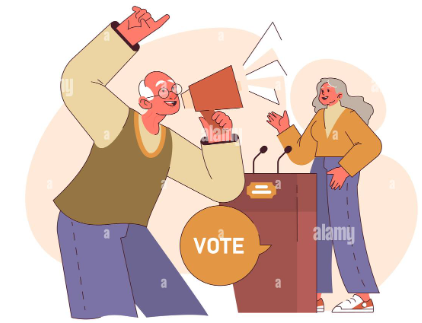
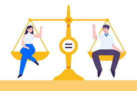
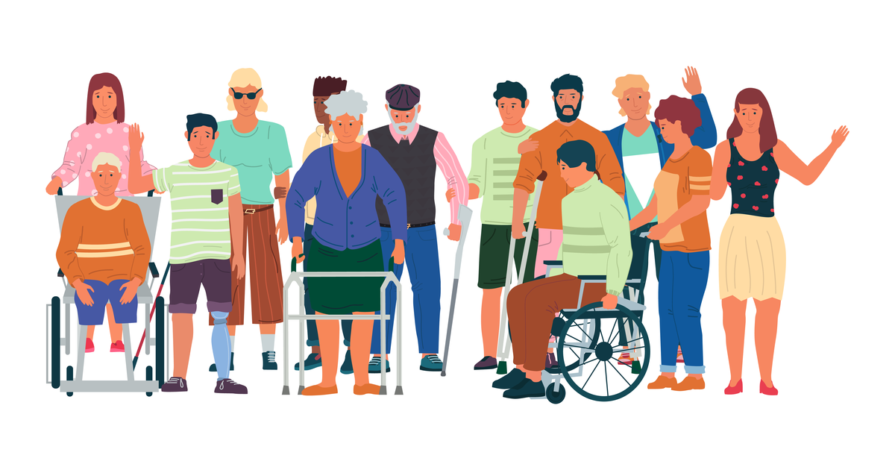
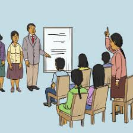

Was Wir Anbieten
Unsere NGO widmet sich der Unterstützung und Bereitstellung von Ressourcen für diejenigen, die von Ungleichheit und Armut betroffen sind. Wir bieten eine Vielzahl von Dienstleistungen an, um Menschen in Situationen von Armut und Ungleichheit zu unterstützen. Unsere Programme umfassen:
- Lebensmittel- und Wohnhilfe: Wir bieten Lebensmittelhilfe und Unterstützung, um sicherzustellen, dass die Menschen Zugang zu nahrhaften Lebensmitteln und einem Dach über dem Kopf haben. Wir arbeiten mit lokalen Organisationen zusammen, um Lebensmittel zu verteilen und Unterstützung bei der Suche nach bezahlbarem Wohnraum zu bieten. 
- Medizinische Versorgung und Gesundheitsdienste: Wir sorgen dafür, dass alle Menschen Zugang zu hochwertiger medizinischer Versorgung haben, unabhängig von ihrer Zahlungsfähigkeit. Wir organisieren kostenlose Gesundheitskliniken und bieten Unterstützung beim Zugang zu notwendigen Medikamenten und Behandlungen.
- Bildungs- und Ausbildungsprogramme: Wir glauben an die transformative Kraft der Bildung, um den Kreislauf der Armut zu durchbrechen. Wir bieten Bildungs- und Berufsbildungsprogramme an, um Menschen zu helfen, neue Fähigkeiten zu erwerben und ihre Beschäftigungsmöglichkeiten und wirtschaftlichen Fortschritte zu erhöhen.
- Psychosoziale und emotionale Unterstützung: Wir erkennen an, dass Armut und Ungleichheit die Menschen nicht nur materiell, sondern auch emotional und psychologisch beeinflussen. Deshalb bieten wir psychosoziale und emotionale Unterstützungsdienste an, um den Menschen zu helfen, die Herausforderungen zu bewältigen und die Barrieren zu überwinden, denen sie gegenüberstehen. 
- Rechtsvertretung und politische Interessenvertretung: Wir setzen uns für öffentliche Politik ein, die die zugrunde liegenden Ursachen von Ungleichheit und Armut in Spanien angeht. Wir arbeiten daran, die Gemeinschaft zu sensibilisieren und zu mobilisieren im Kampf für soziale und wirtschaftliche Gerechtigkeit. 
- Mikrokredite und Finanzierung: Zugang zu Mikrokrediten und Finanzierung für Unternehmer und kleine Unternehmen in benachteiligten Gemeinden, um ihnen zu helfen, ihre Geschäfte zu gründen oder zu erweitern und nachhaltige Einnahmen zu generieren.
- Arbeitsmarktintegration: Programme zur Arbeitsmarktintegration, die Schulung, Berufsberatung und Arbeitsvermittlung für Arbeitslose oder von sozialer Ausgrenzung bedrohte Personen umfassen, um ihre Integration in den Arbeitsmarkt zu erleichtern.
- Rechts- und Beratungsdienste: Bereitstellung kostenloser oder kostengünstiger Rechtsdienste sowie rechtliche Beratung für Personen, die mit rechtlichen Problemen im Zusammenhang mit Wohnen, Beschäftigung, Migration oder anderen Aspekten ihres Lebens konfrontiert sind.
- Zugang zu grundlegenden Dienstleistungen: Erleichterung des Zugangs zu grundlegenden Dienstleistungen wie Trinkwasser, Strom, öffentlichen Verkehrsmitteln und Telekommunikation in marginalisierten oder ländlichen Gemeinden, die diese grundlegenden Dienstleistungen nicht haben.
- Förderung der Gleichstellung der Geschlechter: Entwicklung von Programmen und Sensibilisierungskampagnen, die die Gleichstellung der Geschlechter fördern und Frauen und Mädchen stärken, indem Ressourcen und Unterstützung bereitgestellt werden, um die Barrieren zu überwinden, denen sie in Bildung, Beschäftigung und politischer Teilhabe gegenüberstehen. 
- Förderung der sozialen Inklusion: Organisation von Aktivitäten und Gemeinschaftsveranstaltungen, die die Integration und den sozialen Zusammenhalt fördern und die Teilnahme und den Dialog zwischen verschiedenen ethnischen, kulturellen und sozioökonomischen Gruppen fördern. 
- Forschung und politische Einflussnahme: Durchführung von Forschung und Analyse der Ursachen und Folgen von Ungleichheit und Armut in Spanien und Eintreten für inklusivere und gerechtere öffentliche Politiken auf lokaler, regionaler und nationaler Ebene. 